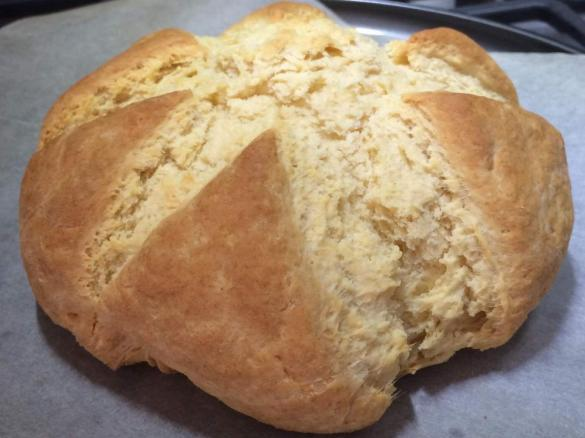

Damper

Description
A traditional Australian bread.
Ingredients
- 450g (3 cups) self-raising flour
- Pinch of salt
- 80g butter, chilled, cubed
- 185ml (3/4 cup) water
Steps
- Preheat oven to 200°C. Line a baking tray with non-stick baking paper. Combine the flour and salt in a large bowl. Use your fingertips to rub the butter into the flour until the mixture resembles fine breadcrumbs.
- Add the water to the flour mixture and use a round-bladed knife in a cutting motion to mix until the mixture just comes together, adding 1-2 tablespoons extra water if the mixture is a little dry. Use your hands to bring the mixture together.
- Turn the dough onto a lightly floured surface and knead gently for 1-2 minutes or until smooth. Shape into an 18cm disc and place on tray. Use a sharp knife that has been dipped in flour to mark 8 wedges on top. Dust the damper with a little extra flour and bake in preheated oven for 30 minutes or until the damper is cooked through and sounds hollow when tapped on the base. Transfer to a wire rack for 5 minutes to cool slightly. Serve warm or at room temperature.